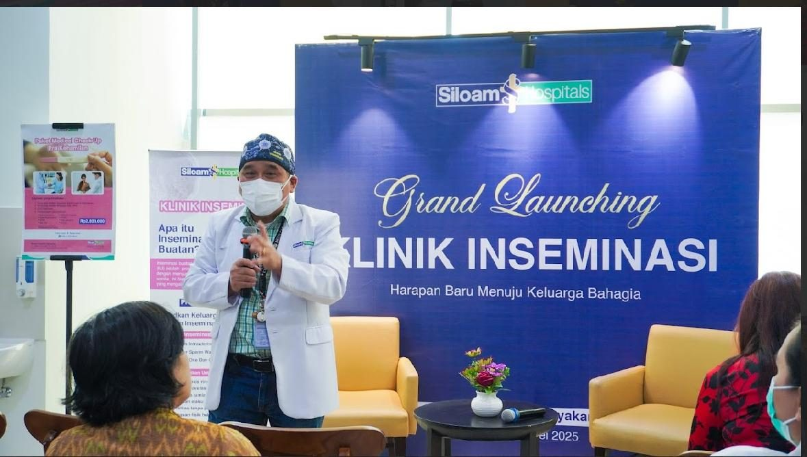
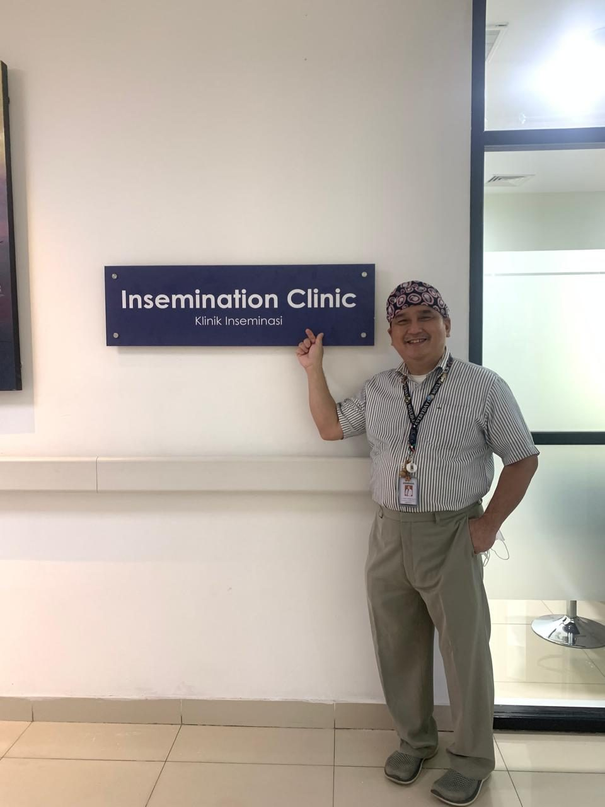
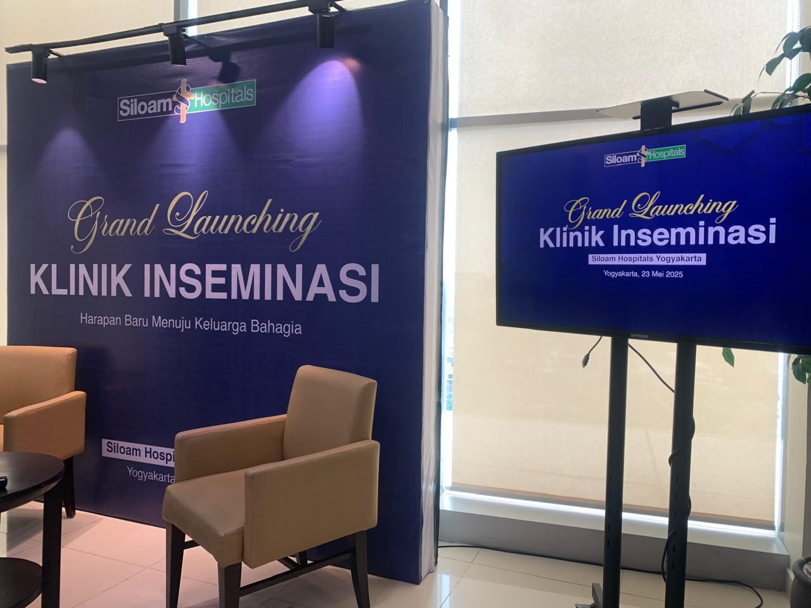
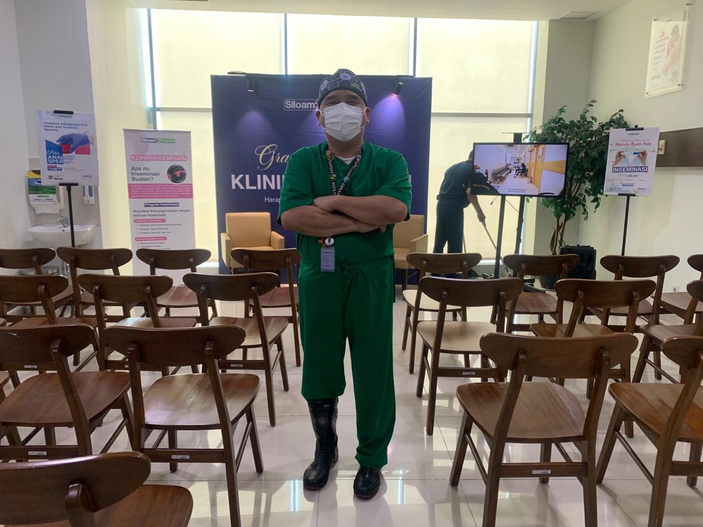
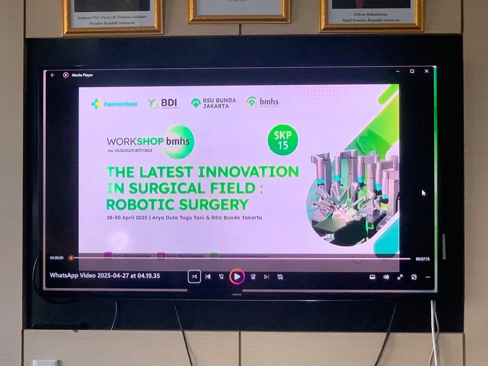
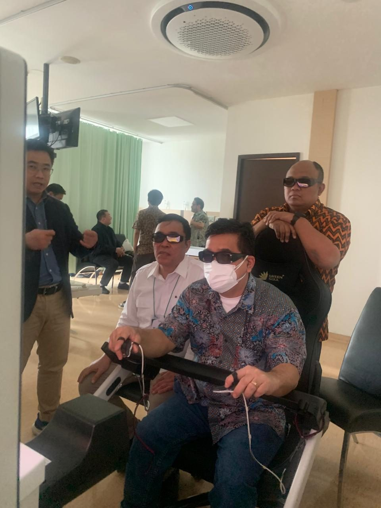
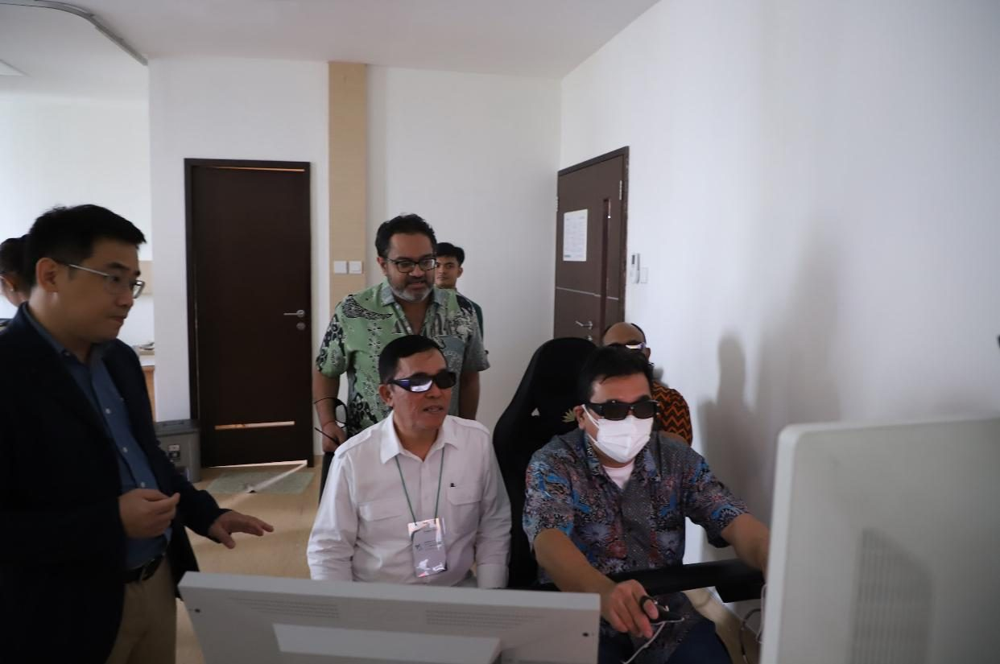
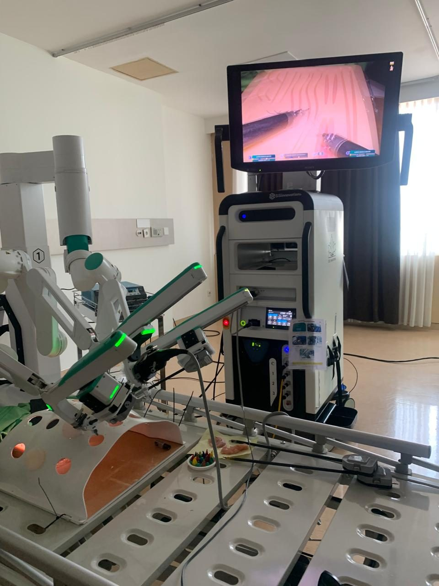
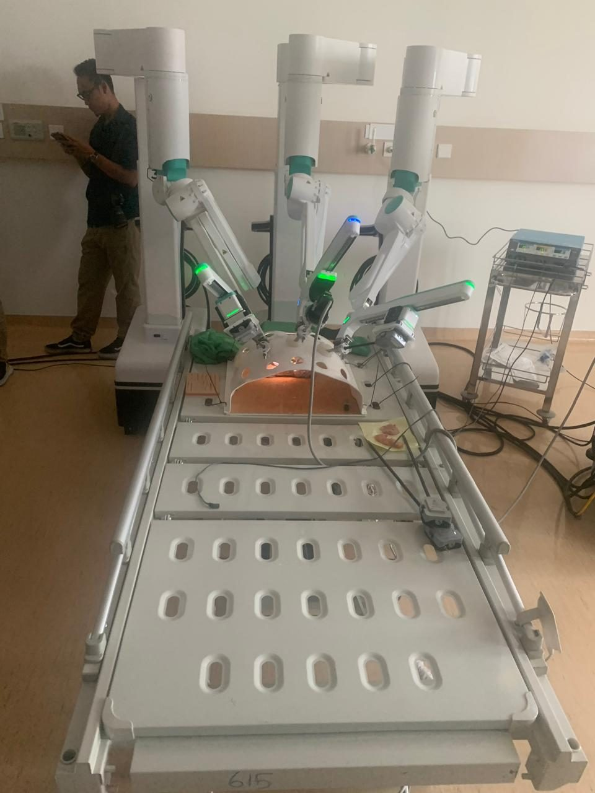
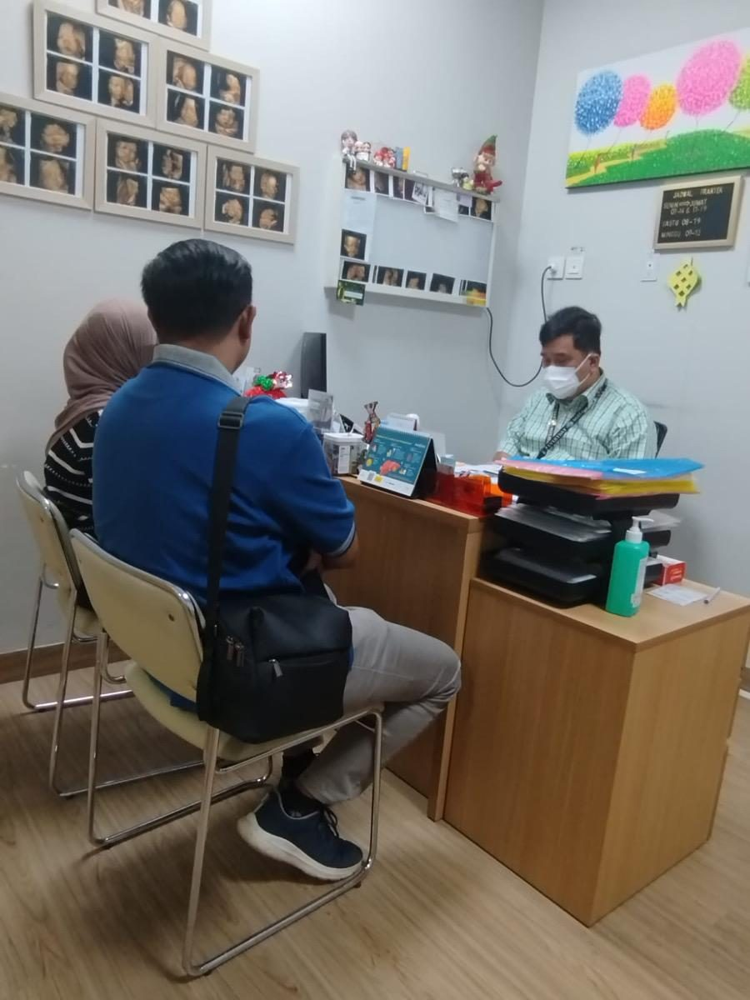
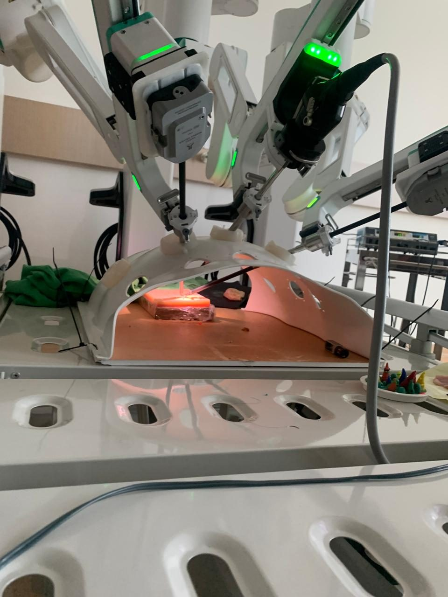
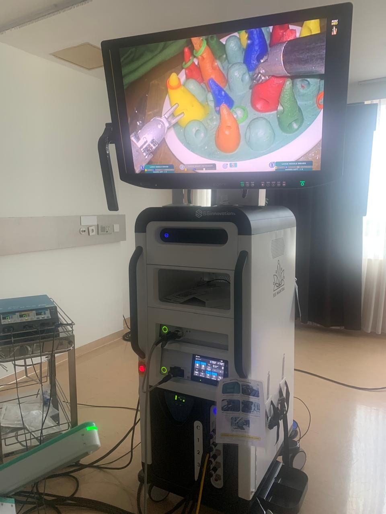
Geser atau ketuk panah · ketuk foto untuk memperbesar
Galeri kegiatan
Dokumentasi kegiatan dr. Danny Wiguna, Sp.OG — peresmian Klinik Inseminasi Siloam Hospitals Yogyakarta dan pelatihan teknologi bedah terbaru.
← Kembali ke halaman utamaKirim pesan untuk menanyakan jadwal praktik dan membuat janji.
Konsultasi via WhatsApp